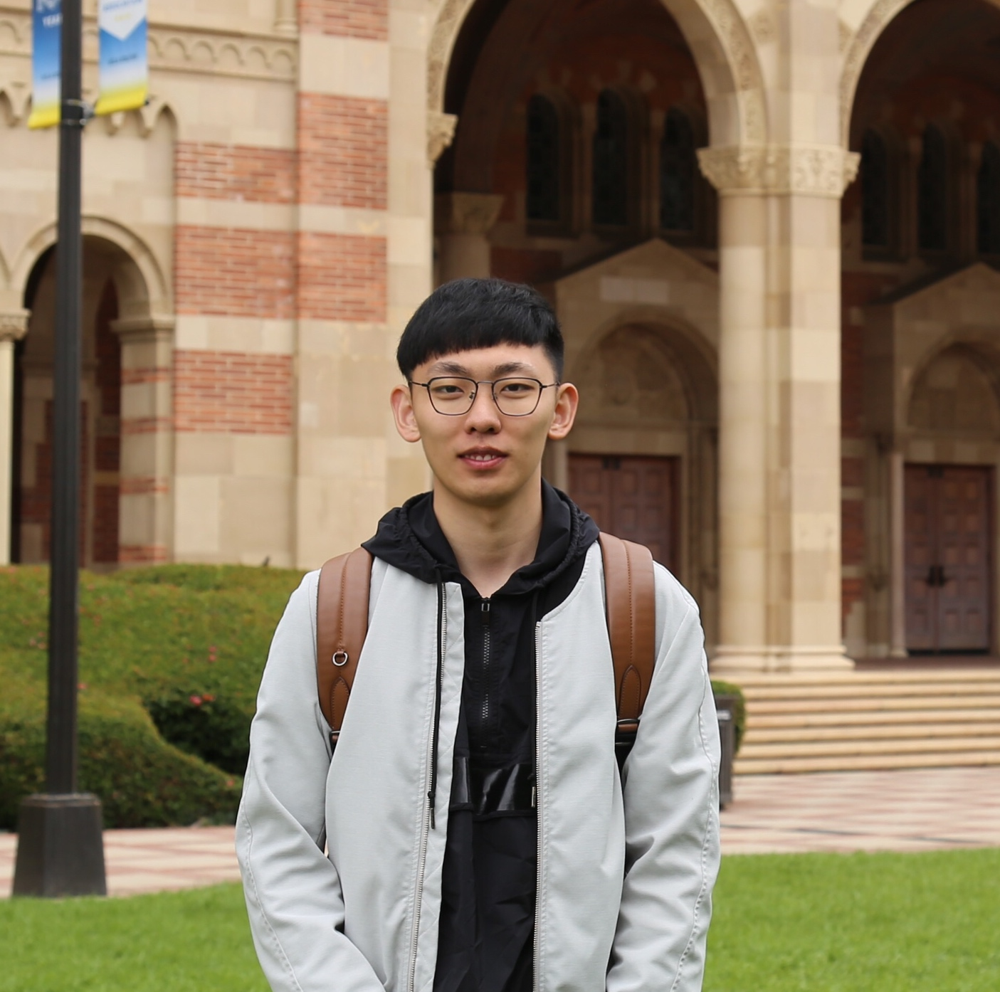

About
I'm a current SDE in Microsoft Azure Workbooks team, previous Amazon SDE. I graduated and got my Master degree(Master Science in Computer Science) at
University of California, Irvine. I worked in
Computational Visio Group at
ICS advised by
Prof. Charless Fowlkes.
My current research is Deep Learning on Bioinformatics and I am also interested in generative models.
Recent Highlight
Starting new position at Microsoft as Software Engineer II (02/28/2022)
Starting new position at Amazon as Software Engineer
 (05/04/2020)
(05/04/2020)
Our paper "Celeganser: Automated Analysis of Nematode Morphology and Age" is accepted by
 (04/15/2020)
(04/15/2020)
Publications

Linfeng Wang, Shu Kong, Zachary Pincus, Charless Fowlkes
CVMI, 2020 at CVPR